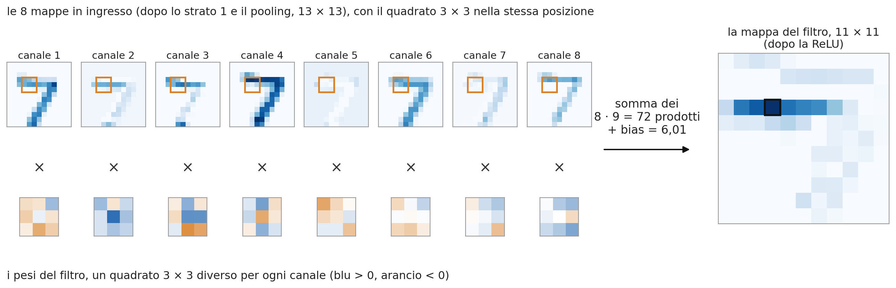
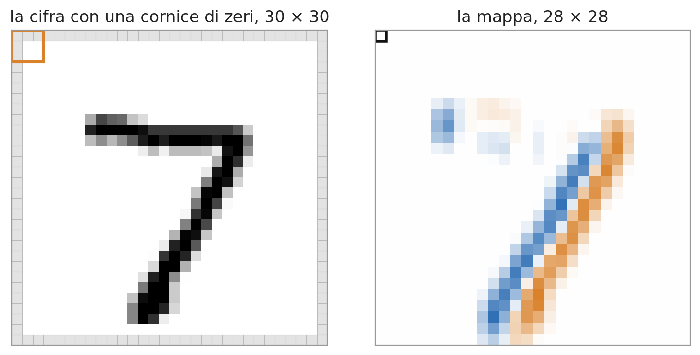
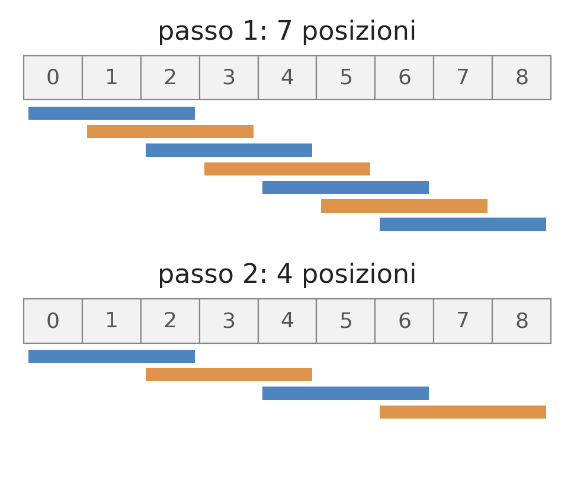
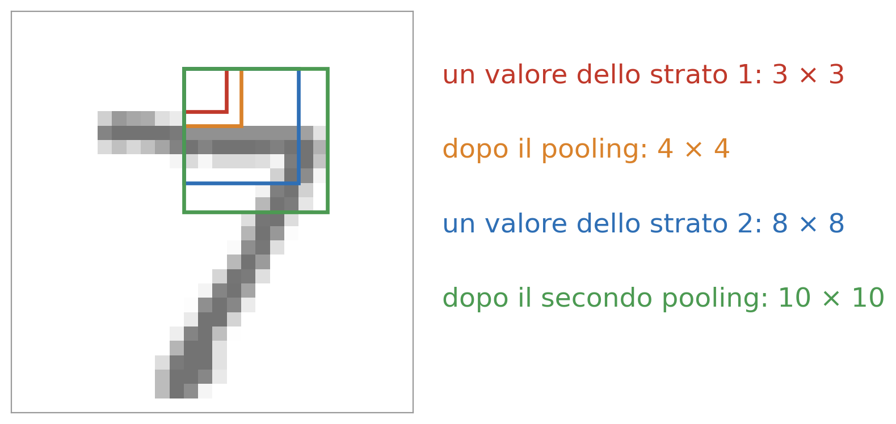
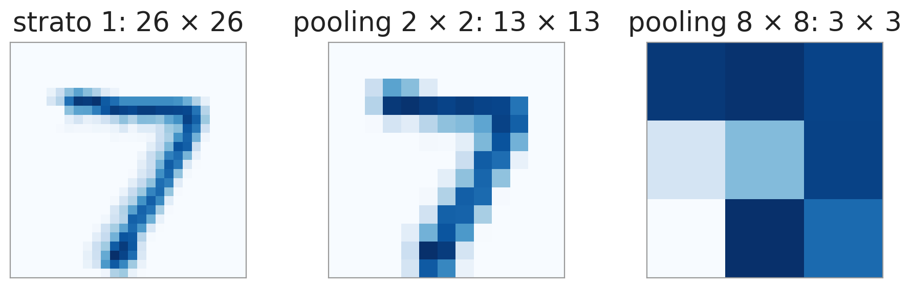
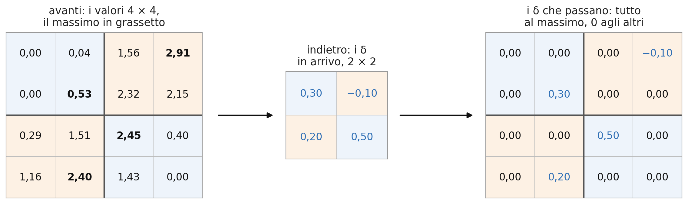

Approfondimento facoltativo: la matematica delle reti convoluzionali

Un filtro dello strato 2 ha un quadrato di 3 × 3 pesi per ogni canale in ingresso, diverso da canale a canale. In ogni posizione somma i prodotti su tutti i \(C\) canali, più un bias: \[z^{(k)}_{ij} = \sum_{c=0}^{C-1} \sum_{p=0}^{2} \sum_{q=0}^{2} w^{(k,c)}_{pq}\, x^{(c)}_{i+p,\, j+q} + b^{(k)}\] dove \(k\) è il filtro e \(c\) il canale. Questo filtro, dopo l’addestramento, risponde alla barra orizzontale del 7.
Una forma si riconosce dalla combinazione di elementi diversi nello stesso posto: nell’angolo del 7 la barra orizzontale incontra il tratto obliquo.
Se dopo lo strato 1 il canale A vale 1 sui tratti orizzontali e il canale B su quelli obliqui, un filtro con peso +1 sull’orizzontale in A, +1 sull’obliquo in B e bias −1,5 dà:
| c’è | somma | dopo la ReLU |
|---|---|---|
| solo l’orizzontale | 1 − 1,5 = −0,5 | 0 |
| solo l’obliquo | 1 − 1,5 = −0,5 | 0 |
| tutti e due | 2 − 1,5 = 0,5 | 0,5 |
La somma sui canali, il bias e la ReLU fanno un «e»: il filtro risponde solo dove i due elementi si incontrano, e un filtro su un canale solo non potrebbe. Allo stesso modo, in un MLP ogni neurone del secondo DenseLayer legge tutte le uscite del primo.
Il numero di filtri di uno strato si sceglie, come il numero di neuroni di un DenseLayer. Ogni filtro produce una mappa, quindi i canali in uscita sono tanti quanti i filtri; i canali in ingresso, le mappe dello strato precedente, fissano invece quanti quadrati di pesi ha ogni filtro: uno per canale, \(C \times K \times K\) pesi in tutto.
Uno strato con \(F\) filtri \(K \times K\) su \(C\) canali ha \[F\,(C K^2 + 1)\] parametri: \(8\,(1 \cdot 9 + 1) = 80\) nello strato 1, \(16\,(8 \cdot 9 + 1) = 1168\) nello strato 2.
Di solito i canali crescono mentre le mappe si rimpiccioliscono: dopo lo strato 1 ci sono 8 × 26 × 26 = 5408 valori, dopo lo strato 2 sono 16 × 11 × 11 = 1936. Più domande, su zone più grandi, in meno posizioni.

Senza padding un filtro 3 × 3 non si può centrare sui pixel del bordo, e ogni strato toglie una riga e una colonna per lato: 28 → 26 → … Il padding aggiunge intorno all’immagine una cornice di zeri larga \(P\): con \(P = 1\) il filtro si centra anche sul pixel in alto a sinistra, e la mappa resta 28 × 28. Gli zeri non aggiungono niente alla somma: sul bordo il filtro usa solo i pixel che ci sono.

Lo stride \(S\) è il passo del filtro: con \(S = 2\) salta una posizione ogni due, e la mappa ha circa metà righe e metà colonne. È un altro modo di rimpicciolire le mappe, al posto del pooling.
Con \(N\) pixel per lato, filtro \(K \times K\), padding \(P\) e stride \(S\), la mappa ha per lato \[N_{out} = \left\lfloor \frac{N + 2P - K}{S} \right\rfloor + 1\] Strato 1: \((28 - 3)/1 + 1 = 26\). Anche il max pooling 2 × 2 segue la formula, con \(K = S = 2\): \(\lfloor 24/2 \rfloor + 1 = 13\) e \(\lfloor 9/2 \rfloor + 1 = 5\).

Il campo recettivo di un valore è la zona della cifra da cui dipende. Un valore dello strato 1 dipende da 3 × 3 pixel; il massimo di due valori vicini da 4 × 4, perché i loro quadrati si sovrappongono; un filtro dello strato 2, su 3 × 3 valori della mappa dimezzata, da 8 × 8; dopo il secondo pooling, da 10 × 10.
Due filtri 3 × 3 di fila, senza pooling, vedono 5 × 5 pixel come un filtro 5 × 5, ma con 2 · 9 = 18 pesi invece di 25 per coppia di canali, e una ReLU in più in mezzo.

Con un pooling 8 × 8 la mappa passa da 26 × 26 a 3 × 3: ogni valore dice solo che in una zona di 8 × 8 pixel c’è un tratto, non dove né accanto a cosa. Con lo stesso addestramento (Adam, 10 epoche, slide «Addestramento e verifica»):
| rete | parametri | sul test |
|---|---|---|
| 1 strato, 8 filtri, pooling 8 × 8 | 810 | 95,0% |
| 1 strato, 64 filtri, pooling 8 × 8 | 6410 | 97,6% |
| 1 strato, 8 filtri, pooling 2 × 2 | 13 610 | 97,9% |
| 2 strati, «Dai bordi alle cifre» | 5258 | 98,4-98,6% |
| passo | operazione | dimensione |
|---|---|---|
| ingresso | pixel divisi per 255 | 1 × 28 × 28 |
| strato 1 | 8 filtri 3 × 3, ReLU | 8 × 26 × 26 |
| pooling | massimo su 2 × 2 | 8 × 13 × 13 |
| strato 2 | 16 filtri 3 × 3 su 8 canali, ReLU | 16 × 11 × 11 |
| pooling | massimo su 2 × 2, scartando l’ultima riga e colonna | 16 × 5 × 5 |
| testa | DenseLayer(10, 400), softmax, \(E = -\ln p_y\) |
10 |
Nel framework ogni esempio è una colonna: una mappa \(C \times H \times W\) vi sta canale per canale, e ogni canale riga per riga come i pixel nel CSV, con il valore \((c, i, j)\) alla riga \(c\,H W + i\,W + j\). Così le 16 mappe 5 × 5 sono già, nello stesso ordine, i 400 ingressi del DenseLayer.
Come nella Lezione 03, \(\delta_{ij} = \partial E / \partial z_{ij}\) è il segnale d’errore della posizione \((i, j)\) della mappa. Da \(z_{ij} = \sum_{p,q} w_{pq}\, x_{i+p,\, j+q} + b\): \[\frac{\partial E}{\partial w_{pq}} = \sum_{i,j} \delta_{ij}\, x_{i+p,\, j+q} \qquad\quad \frac{\partial E}{\partial b} = \sum_{i,j} \delta_{ij} \qquad\quad \frac{\partial E}{\partial x_{mn}} = \sum_{p,q} \delta_{m-p,\, n-q}\, w_{pq}\] Il peso è lo stesso in tutte le posizioni, e il suo gradiente somma i contributi di tutte: come per un peso di un DenseLayer si sommano quelli degli esempi di un batch.
\(\partial E/\partial x\) è il segnale d’errore che passa allo strato precedente, come \(W^\mathsf{T}\boldsymbol\delta\) in un DenseLayer (Lezione 03). Ogni valore dell’ingresso entra in 9 posizioni del filtro; nella somma \(\delta_{m-p,\, n-q}\) vale 0 se la posizione \((m-p,\ n-q)\) cade fuori dalla mappa, quindi sul bordo i contributi sono meno di 9: \(x_{00}\), per esempio, riceve solo \(\delta_{00}\, w_{00}\). Con più canali si somma anche sui filtri \(k\) (slide «La backpropagation con più canali»).

Il pooling calcola \(y = \max(a_1, a_2, a_3, a_4)\) per ogni quadrato. Nel quadrato in alto a destra \(y = 2{,}91\): se 2,91 cresce di 0,01, \(y\) cresce di 0,01; se cresce 2,32, \(y\) non cambia. Quindi \[\frac{\partial y}{\partial a_j} = \begin{cases} 1 & \text{se } a_j \text{ è il massimo} \\ 0 & \text{altrimenti} \end{cases} \qquad\qquad \frac{\partial E}{\partial a_j} = \delta \, \frac{\partial y}{\partial a_j}\] dove \(\delta = \partial E / \partial y\) arriva dallo strato successivo. Il \(\delta\) va tutto al massimo e gli altri tre ricevono 0; per questo nel passo in avanti si ricorda dove stava il massimo. Il pooling non ha pesi da aggiornare.
In matematica la convoluzione di \(x\) con \(w\) capovolge il filtro: \[(w * x)_{ij} = \sum_{p,q} w_{pq}\, x_{i-p,\, j-q}\] Quello che calcola uno strato di una CNN, con \(x_{i+p,\, j+q}\), è una correlazione: una convoluzione con il filtro ruotato di 180°. Molte librerie calcolano la correlazione e la chiamano convoluzione.
Per una rete non cambia niente: i pesi si imparano, e la rete impara direttamente il filtro ruotato. La convoluzione vera compare comunque: il gradiente verso l’ingresso, nella slide «La backpropagation di un filtro», è la convoluzione dei \(\delta\) con il filtro.
Per uno strato con \(C\) canali in ingresso e \(F\) filtri, con \(\delta^{(k)}_{ij} = \partial E / \partial z^{(k)}_{ij}\) il segnale d’errore della mappa \(k\): \[\frac{\partial E}{\partial w^{(k,c)}_{pq}} = \sum_{i,j} \delta^{(k)}_{ij}\, x^{(c)}_{i+p,\, j+q}, \qquad\qquad \frac{\partial E}{\partial b^{(k)}} = \sum_{i,j} \delta^{(k)}_{ij}\] \[\frac{\partial E}{\partial x^{(c)}_{mn}} = \sum_{k=0}^{F-1} \sum_{p,q} \delta^{(k)}_{m-p,\, n-q}\, w^{(k,c)}_{pq}\] con \(\delta^{(k)}_{m-p,\, n-q} = 0\) se la posizione cade fuori dalla mappa. Sono le formule di «La backpropagation di un filtro», con un indice in più: i pesi del filtro \(k\) sul canale \(c\) usano solo il canale \(c\) dell’ingresso, mentre il gradiente verso il canale \(c\) raccoglie tutti i filtri, perché ogni filtro legge tutti i canali. Per lo strato 1 il gradiente verso i pixel non serve.
DenseLayer, \(\partial E / \partial W_3 = d\mathbf{z}\, \mathbf{f}^\mathsf{T}\) e \(\partial E / \partial \mathbf{f} = W_3^\mathsf{T} d\mathbf{z}\), da rileggere come 16 mappe 5 × 5.DenseLayer(10, 400) con \(s = \sqrt{1/400} = 0{,}05\).double, su 3 immagini, con le differenze centrali e \(h = 10^{-6}\) su 8 elementi a caso di ogni matrice. L’errore relativo \(|g_\text{num} - g| / (|g_\text{num}| + |g|)\) è al più \(2{,}6 \cdot 10^{-7}\); da \(10^{-2}\) in su indica uno sbaglio.Il filtro dei bordi verticali della Lezione 15, con Eigen, sul 7 di mnist_test.csv.
filtro.cpp (prima parte)
#include <fstream>
#include <iostream>
#include <stdexcept>
#include <string>
#include <Eigen/Dense>
// la prima cifra di mnist_test.csv: 28 x 28, fra 0 e 1
Eigen::MatrixXd prima_immagine(const std::string& nome) {
std::ifstream f(nome);
if (!f) throw std::runtime_error("non trovo " + nome);
std::string intestazione;
std::getline(f, intestazione);
int etichetta;
char virgola;
f >> etichetta;
Eigen::MatrixXd x(28, 28);
for (int i = 0; i < 28; ++i)
for (int j = 0; j < 28; ++j) {
f >> virgola >> x(i, j);
x(i, j) /= 255.0;
}
return x;
}mainfiltro.cpp (seconda parte)
// z_ij = somma su p, q di w_pq x_(i+p, j+q), piu' b: senza padding
Eigen::MatrixXd filtra(const Eigen::MatrixXd& x,
const Eigen::Matrix3d& w, double b) {
Eigen::MatrixXd z(x.rows() - 2, x.cols() - 2);
for (int i = 0; i < z.rows(); ++i)
for (int j = 0; j < z.cols(); ++j)
z(i, j) = (x.block<3, 3>(i, j).array()
* w.array()).sum() + b;
return z;
}
int main() {
Eigen::MatrixXd x = prima_immagine("../../MNIST_DATASETS/mnist_test.csv");
Eigen::Matrix3d w;
w << -1, 0, 1, -1, 0, 1, -1, 0, 1; // il filtro dei bordi verticali
Eigen::MatrixXd z = filtra(x, w, 0.0);
std::cout << "z(15, 14) = " << z(15, 14) << "\n";
for (int i = 0; i < z.rows(); ++i) { // + positiva, - negativa, . vicino a 0
for (int j = 0; j < z.cols(); ++j)
std::cout << (z(i, j) > 0.5 ? '+' : z(i, j) < -0.5 ? '-' : '.');
std::cout << "\n";
}
return 0;
}z(15, 14) = 2.32157
..........................
..........................
..........................
..........................
..........................
.....+....................
....++...-.........--.....
....++.............---....
....++...........++---....
.........++......++---....
................+++--.....
...............+++---.....
...............+++--......
..............+++---......
..............++.--.......
.............+++---.......
.............++.--........
............+++---........
...........+++.--.........
...........++.---.........
..........+++---..........
.........+++.--...........
.........+++---...........
........+++.---...........
........+++---............
........+++---............A mano: \(z_{15,14}\) è la colonna di destra del quadrato meno quella di sinistra, \((0{,}52 + 0{,}80 + 1{,}00) - (0 + 0 + 0) = 2{,}32\): il valore della slide 4 della Lezione 15.
La mappa è quella della slide 4, in caratteri: + dove il tratto comincia, andando verso destra, - dove finisce.
Provate: alla riga 39 mettete il filtro dei bordi orizzontali, -1, -1, -1, 0, 0, 0, 1, 1, 1. Cosa cambia?
Si accende la barra del 7: + sopra, dove il tratto comincia andando verso il basso, - sotto. L’obliquo resta, perché scende anche in verticale. z(15, 14) diventa 0.968627.
Le moltiplicazioni per un’immagine, una per peso e per posizione (le somme sono altrettante):
| strato | conto | moltiplicazioni |
|---|---|---|
| 1 | 26 × 26 posizioni × 8 filtri × 9 pesi | 48 672 |
| 2 | 11 × 11 posizioni × 16 filtri × 72 pesi | 139 392 |
| 3 | DenseLayer(10, 400) |
4000 |
| totale | 192 064 |
La rete 784 → 128 → 10 ne fa \(784 \cdot 128 + 128 \cdot 10 = 101\,632\). La CNN ha 19 volte meno parametri ma fa quasi il doppio dei calcoli, perché ogni peso si usa in molte posizioni. Il conto cresce con l’area dell’immagine: per questo le CNN si eseguono sulle GPU.